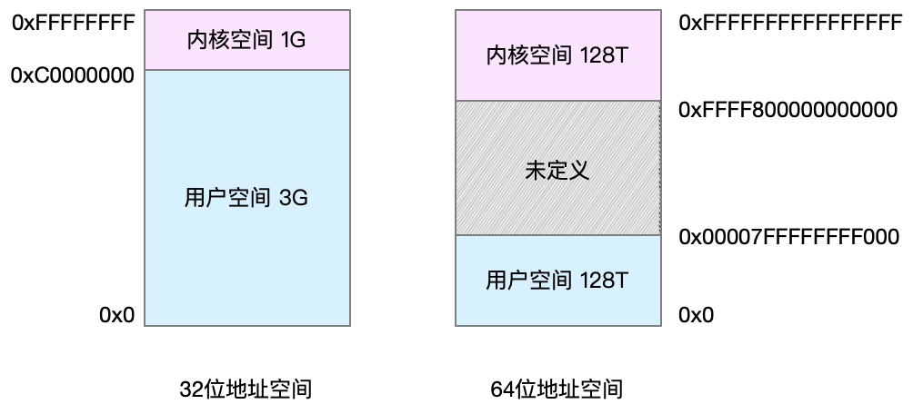
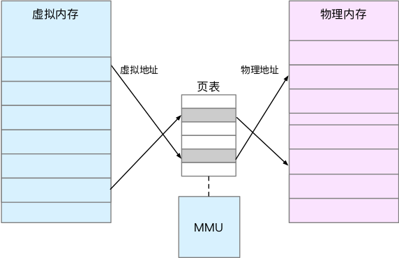
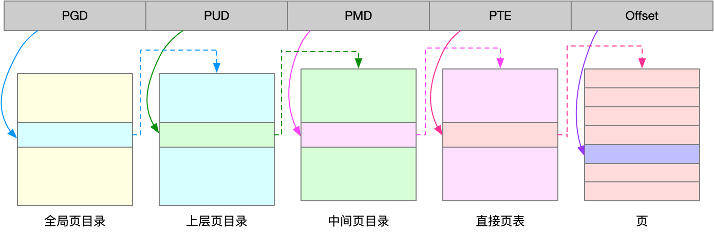
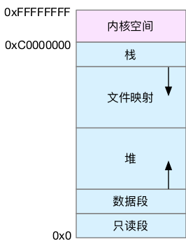
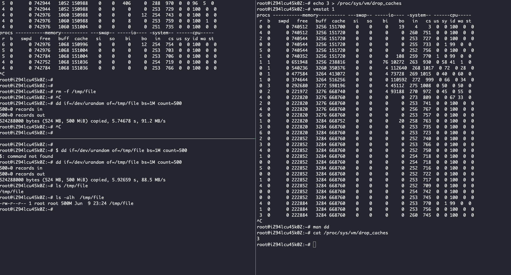
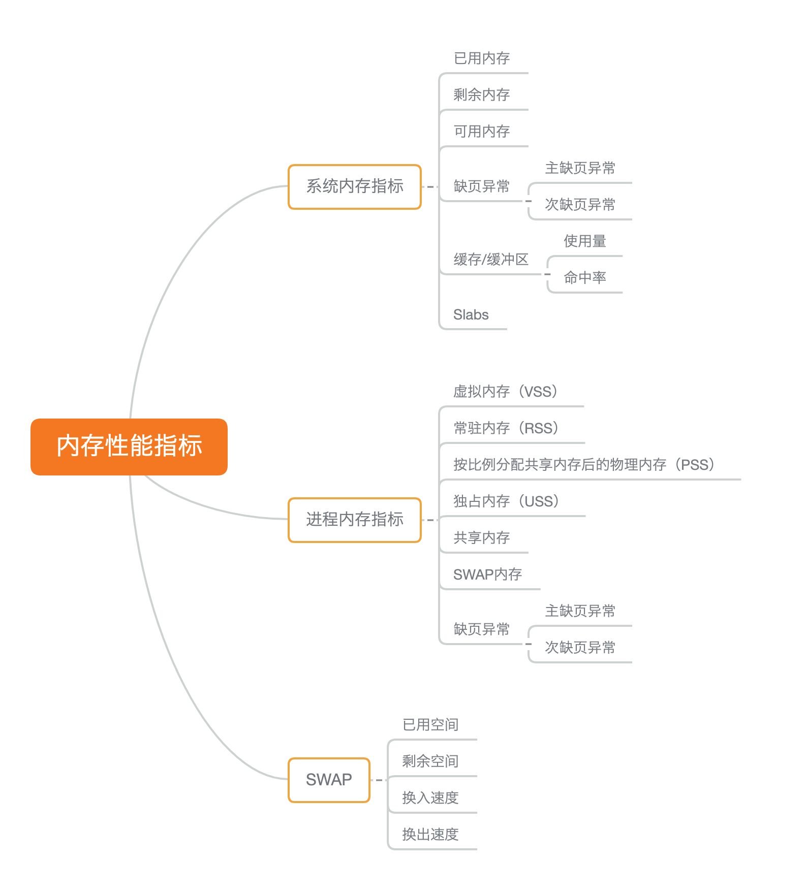
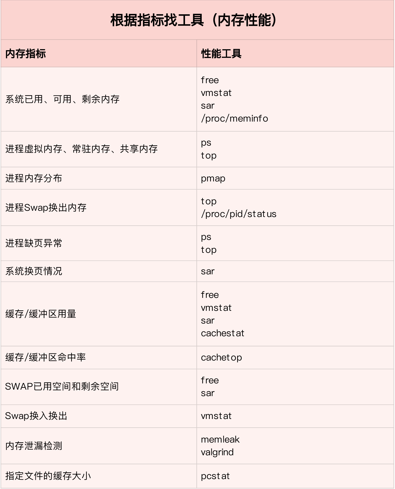
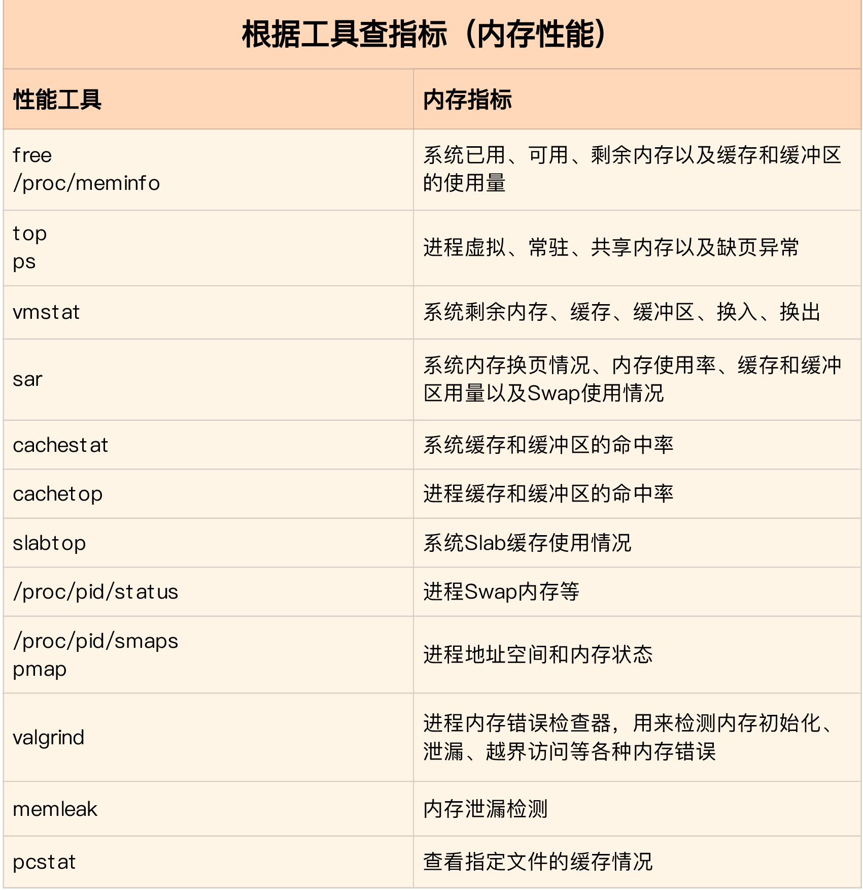
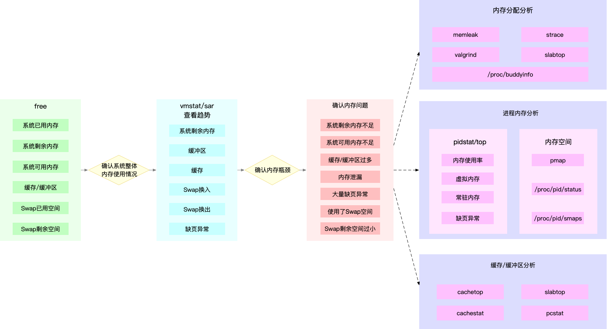

我们通常所说的内存容量，其实指的是物理内存。物理内存也称为 主存，大多数计算机用的主存都是动态随机访问内存（DRAM）。只有内核才可以直接访问物理内存。Linux 内核给每个进程都提供了一个独立的虚拟地址空间，并且这个地址空间是连续的。这样，进程就可以很方便地访问内存，更确切地说是访问 虚拟内存 。
虚拟地址空间的内部又被分为内核空间和用户空间两部分，不同字长（也就是单个 CPU 指令可以处理数据的最大长度）的处理器，地址空间的范围也不同。常见的 32 位操作系统和 64 为操作系统虚拟地址空间表示如下：

进程在用户态时，只能访问用户空间内存；只有进入内核态后，才可以访问内核空间内存。虽然每个进程的地址空间都包含了内核空间，但这些内核空间，其实关联的都是相同的物理内存。这样，进程切换到内核态后，就可以很方便地访问内核空间内存。
并不是所有的虚拟内存都会分配物理内存，只有那些实际使用的虚拟内存才分配物理内存，并且分配后的物理内存，是通过内存映射来管理的。内存映射，其实就是将虚拟内存地址映射到物理内存地址。为了完成内存映射，内核为每个进程都维护了一张 页表，记录虚拟地址与物理地址的映射关系，如下图所示：

页表实际上存储在 CPU 的内存管理单元 MMU 中，这样，正常情况下，处理器就可以直接通过硬件，找出要访问的内存。MMU 并不以字节为单位来管理内存，而是规定了一个内存映射的最小单位，也就是页，通常是 4 KB 大小。这样，每一次内存映射，都需要关联 4 KB 或者 4KB 整数倍的内存空间。页的大小只有 4 KB ，导致的另一个问题就是，整个页表会变得非常大。了解决页表项过多的问题，Linux 提供了两种机制，也就是 多级页表 和 大页（HugePage）。
多级页表就是把内存分成区块来管理，将原来的映射关系改成区块索引和区块内的偏移。由于虚拟内存空间通常只用了很少一部分，那么，多级页表就只保存这些使用中的区块，这样就可以大大地减少页表的项数。Linux 用的正是四级页表来管理内存页，如下图所示，虚拟地址被分为 5 个部分，前 4 个表项用于选择页，而最后一个索引表示页内偏移。

大页，顾名思义，就是比普通页更大的内存块，常见的大小有 2MB 和 1GB。大页通常用在使用大量内存的进程上，比如 Oracle、DPDK 等。
虚拟内存空间分布
虚拟内存空间，如下图所示，从下到上被分为只读段，数据段，堆，文件映射，栈以及内核空间。

只读段，包括代码和常量等。
数据段，包括全局变量等。
堆，包括动态分配的内存，从低地址开始向上增长，如 C 的 malloc 函数。
文件映射段，包括动态库、共享内存等，从高地址开始向下增长，如使用 mmap() 函数映射。
栈，包括局部变量和函数调用的上下文等。栈的大小是固定的，一般是 8 MB。
内存分配与回收
malloc() 是 C 标准库提供的内存分配函数，对应到系统调用上，有两种实现方式，即 brk() 和 mmap()。
对小块内存（小于 128K），C 标准库使用 brk() 来分配，也就是通过移动堆顶的位置来分配内存。这些内存释放后并不会立刻归还系统，而是被缓存起来，这样就可以重复使用。可以减少缺页异常的发生，提高内存访问效率。不过，由于这些内存没有归还系统，在内存工作繁忙时，频繁的内存分配和释放会造成内存碎片。
而大块内存（大于 128K），则直接使用内存映射 mmap() 来分配，也就是在文件映射段找一块空闲内存分配出去。会在释放时直接归还系统，所以每次 mmap 都会发生缺页异常。在内存工作繁忙时，频繁的内存分配会导致大量的缺页异常，使内核的管理负担增大。这也是 malloc 只对大块内存使用 mmap 的原因。
对内存来说，如果只分配而不释放，就会造成内存泄漏，甚至会耗尽系统内存。所以，在应用程序用完内存后，还需要调用 free() 或 unmap() ，来释放这些不用的内存。
系统不会任由某个进程用完所有内存。在发现内存紧张时，系统就会通过一系列机制来回收内存，比如下面这三种方式：
回收缓存，比如使用 LRU（Least Recently Used）算法，回收最近使用最少的内存页面；
回收不常访问的内存，把不常用的内存通过交换分区直接写到磁盘中；
杀死进程，内存紧张时系统还会通过 OOM（Out of Memory），直接杀掉占用大量内存的进程。
其中，第二种方式回收不常访问的内存时，会用到交换分区（以下简称 Swap）。Swap 其实就是把一块磁盘空间当成内存来用。它可以把进程暂时不用的数据存储到磁盘中（这个过程称为换出），当进程访问这些内存时，再从磁盘读取这些数据到内存中（这个过程称为换入）。
所以，你可以发现，Swap 把系统的可用内存变大了。不过要注意，通常只在内存不足时，才会发生 Swap 交换。并且由于磁盘读写的速度远比内存慢，Swap 会导致严重的内存性能问题。
OOM（Out of Memory），其实是内核的一种保护机制。它监控进程的内存使用情况，并且使用 oom_score 为每个进程的内存使用情况进行评分：
一个进程消耗的内存越大，oom_score 就越大；
一个进程运行占用的 CPU 越多，oom_score 就越小。
进程的 oom_score 越大，代表消耗的内存越多，也就越容易被 OOM 杀死，从而可以更好保护系统。为了实际工作的需要，管理员可以通过 /proc 文件系统，手动设置进程的 oom_adj ，从而调整进程的 oom_score。
oom_adj 的范围是 [-17, 15]，数值越大，表示进程越容易被 OOM 杀死；数值越小，表示进程越不容易被 OOM 杀死，其中 -17 表示禁止 OOM。
比如用下面的命令，你就可以把 sshd 进程的 oom_adj 调小为 -16，这样， sshd 进程就不容易被 OOM 杀死。
echo -16 > /proc/$(pidof sshd)/oom_adj
内存使用情况
free 是一个比较常见的查看内存使用情况的工具：
root@iZ94lcu45k0Z:~# free -h
total used free shared buff/cache available
Mem: 985M 105M 107M 11M 771M 688M
Swap: 947M 0B 947M
free 输出的是一个表格，表格总共有两行六列，这两行分别是物理内存 Mem 和交换分区 Swap 的使用情况，而六列中，每列数据的含义分别为：
- 第一列，total 是总内存大小；
- 第二列，used 是已使用内存的大小，包含了共享内存；
- 第三列，free 是未使用内存的大小；
- 第四列，shared 是共享内存的大小；
- 第五列，buff/cache 是缓存和缓冲区的大小；
- 最后一列，available 是新进程可用内存的大小。available 不仅包含未使用内存，还包括了可回收的缓存，所以一般会比未使用内存更大。不过，并不是所有缓存都可以回收，因为有些缓存可能正在使用中。
free 显示的是整个系统的内存使用情况。如果你想查看进程的内存使用情况，可以用 top 或者 ps 等工具。比如，下面是 top 的输出示例：
按下M切换到内存排序
$ top
...
KiB Mem : 8169348 total, 6871440 free, 267096 used, 1030812 buff/cache
KiB Swap: 0 total, 0 free, 0 used. 7607492 avail Mem
PID USER PR NI VIRT RES SHR S %CPU %MEM TIME+ COMMAND
430 root 19 -1 122360 35588 23748 S 0.0 0.4 0:32.17 systemd-journal
1075 root 20 0 771860 22744 11368 S 0.0 0.3 0:38.89 snapd
1048 root 20 0 170904 17292 9488 S 0.0 0.2 0:00.24 networkd-dispat
1 root 20 0 78020 9156 6644 S 0.0 0.1 0:22.92 systemd
12376 azure 20 0 76632 7456 6420 S 0.0 0.1 0:00.01 systemd
12374 root 20 0 107984 7312 6304 S 0.0 0.1 0:00.00 sshd
...
top 输出界面的顶端，也显示了系统整体的内存使用情况，这些数据跟 free 类似，下面的内容中，跟内存相关的几列数据：
VIRT是进程虚拟内存的大小，只要是进程申请过的内存，即便还没有真正分配物理内存，也会计算在内。RES是常驻内存的大小，也就是进程实际使用的物理内存大小，但不包括 Swap 和共享内存。SHR是共享内存的大小，比如与其他进程共同使用的共享内存、加载的动态链接库以及程序的代码段等。%MEM是进程使用物理内存占系统总内存的百分比
除了要认识这些基本信息，在查看 top 输出时，要注意两点。
- 第一，虚拟内存通常并不会全部分配物理内存。从上面的输出，你可以发现每个进程的虚拟内存都比常驻内存大得多。
- 第二，共享内存 SHR 并不一定是共享的，比方说，程序的代码段、非共享的动态链接库，也都算在 SHR 里。当然，SHR 也包括了进程间真正共享的内存。所以在计算多个进程的内存使用时，不要把所有进程的 SHR 直接相加得出结果。
Buffer 和 Cache
这里我们着重学习下 Buffer 和 Cache，我们可以用 free 获得这个指标，这个指标的详细意思可以通过 man free 获取到：
DESCRIPTION
free displays the total amount of free and used physical and swap memory in the system, as well as the buffers and caches used by
the kernel. The information is gathered by parsing /proc/meminfo. The displayed columns are:
total Total installed memory (MemTotal and SwapTotal in /proc/meminfo)
used Used memory (calculated as total - free - buffers - cache)
free Unused memory (MemFree and SwapFree in /proc/meminfo)
shared Memory used (mostly) by tmpfs (Shmem in /proc/meminfo)
buffers
Memory used by kernel buffers (Buffers in /proc/meminfo)
cache Memory used by the page cache and slabs (Cached and SReclaimable in /proc/meminfo)
buff/cache
Sum of buffers and cache
....
从上面看出 Buffer 是内核缓冲区用到的内存，对应的是 /proc/meminfo 中的 Buffers 值。Cache 是内核页缓存和 Slab 用到的内存，对应的是 /proc/meminfo 中的 Cached 与 SReclaimable 之和。
proc 文件系统同时是很多性能工具的最终数据来源，既然 Buffers、Cached、SReclaimable 这几个指标不容易理解，我们继续通过 man proc 获取文档。
Buffers %lu
Relatively temporary storage for raw disk blocks that shouldn't get tremendously large (20MB or so).
Cached %lu
In-memory cache for files read from the disk (the page cache). Doesn't include SwapCached.
...
SReclaimable %lu (since Linux 2.6.19)
Part of Slab, that might be reclaimed, such as caches.
SUnreclaim %lu (since Linux 2.6.19)
Part of Slab, that cannot be reclaimed on memory pressure.
通过这个文档，我们可以看到：
Buffers是对原始磁盘块的临时存储，也就是用来缓存磁盘的数据，通常不会特别大（20MB 左右）。这样，内核就可以把分散的写集中起来，统一优化磁盘的写入，比如可以把多次小的写合并成单次大的写等等。Cached是从磁盘读取文件的页缓存，也就是用来缓存从文件读取的数据。这样，下次访问这些文件数据时，就可以直接从内存中快速获取，而不需要再次访问缓慢的磁盘。
·SReclaimable是Slab的一部分。Slab包括两部分，其中的可回收部分，用 SReclaimable 记录；而不可回收部分，用 SUnreclaim 记录。
通过 vmstat 命令可以查看 Buffer 和 Cache 的使用情况，如下图：

buff 和 cache 就是我们前面看到的 Buffers 和 Cache，单位是 KB。
bi 和 bo 则分别表示块设备读取和写入的大小，单位为块 / 秒。因为 Linux 中块的大小是 1KB，所以这个单位也就等价于 KB/s。
详情查看文章：基础篇：怎么理解内存中的Buffer和Cache？
经过该文章中的实验，总结得出：
Buffer既可以用作“将要写入磁盘数据的缓存”，也可以用作“从磁盘读取数据的缓存”。Cache既可以用作“从文件读取数据的页缓存”，也可以用作“写文件的页缓存”。
磁盘是一个块设备，可以划分为不同的分区；在分区之上再创建文件系统，挂载到某个目录，之后才可以在这个目录中读写文件。Linux 中“一切皆文件”，而文章中提到的“文件”是普通文件，磁盘是块设备文件。
在读写普通文件时，会经过文件系统，由文件系统负责与磁盘交互；而读写磁盘或者分区时，就会跳过文件系统，也就是所谓的“裸I/O“。这两种读写方式所使用的缓存是不同的，也就是文中所讲的 Cache 和 Buffer 区别。
缓存命中率
所谓 缓存命中率，是指直接通过缓存获取数据的请求次数，占所有数据请求次数的百分比。命中率越高，表示使用缓存带来的收益越高，应用程序的性能也就越好。
实际上，缓存是现在所有高并发系统必需的核心模块，主要作用就是把经常访问的数据（也就是热点数据），提前读入到内存中。这样，下次访问时就可以直接从内存读取数据，而不需要经过硬盘，从而加快应用程序的响应速度。
cachestat 和 cachetop ，它们正是查看系统缓存命中情况的工具。cachestat 提供了整个操作系统缓存的读写命中情况。cachetop 提供了每个进程的缓存命中情况。
例如，运行 cachestat 以 1 秒的事件建个，输出3组统计数据：
$ cachestat 1 3
TOTAL MISSES HITS DIRTIES BUFFERS_MB CACHED_MB
2 0 2 1 17 279
2 0 2 1 17 279
2 0 2 1 17 279
这些指标从左到右依次表示：
- TOTAL ，表示总的 I/O 次数；
- MISSES ，表示缓存未命中的次数；
- HITS ，表示缓存命中的次数；
- DIRTIES， 表示新增到缓存中的脏页数；
- BUFFERS_MB 表示 Buffers 的大小，以 MB 为单位；
- CACHED_MB 表示 Cache 的大小，以 MB 为单位。
再来看一个 cachetop 的运行界面：
$ cachetop
11:58:50 Buffers MB: 258 / Cached MB: 347 / Sort: HITS / Order: ascending
PID UID CMD HITS MISSES DIRTIES READ_HIT% WRITE_HIT%
13029 root python 1 0 0 100.0% 0.0%
输出跟 top 类似，默认按照缓存的命中次数（HITS）排序，展示了每个进程的缓存命中情况。具体到每一个指标，这里的 HITS、MISSES 和 DIRTIES ，跟 cachestat 里的含义一样，分别代表间隔时间内的缓存命中次数、未命中次数以及新增到缓存中的脏页数。
应用中，我们可以通过利用系统的缓存加快读写磁盘或文件的速度。详情请查看 如何利用系统缓存优化程序的运行效率？
查看文件缓存大小
除了缓存的命中率外，可以使用 pcstat 查看指定文件的缓存大小，安装好之后，如下查看 /bin/ls 的缓存情况：
$ pcstat /bin/ls
+---------+----------------+------------+-----------+---------+
| Name | Size (bytes) | Pages | Cached | Percent |
|---------+----------------+------------+-----------+---------|
| /bin/ls | 133792 | 33 | 0 | 000.000 |
+---------+----------------+------------+-----------+---------+
这个输出中，Cached 就是 /bin/ls 在缓存中的大小，而 Percent 则是缓存的百分比。你看到它们都是 0，这说明 /bin/ls 并不在缓存中。如果你执行一下 ls 命令，再运行相同的命令来查看的话，就会发现 /bin/ls 都在缓存中了：
$ ls
$ pcstat /bin/ls
+---------+----------------+------------+-----------+---------+
| Name | Size (bytes) | Pages | Cached | Percent |
|---------+----------------+------------+-----------+---------|
| /bin/ls | 133792 | 33 | 33 | 100.000 |
+---------+----------------+------------+-----------+---------+
内存泄漏
进程的内存空间中，用户空间内存包括多个不同的内存段，比如只读段、数据段、堆、栈以及文件映射段等，这些内存段正是应用程序使用内存的基本方式。其中：
栈内存由系统自动分配和管理。局部变量分配在栈空间上，一旦程序运行超出了这个局部变量的作用域，栈内存就会被系统自动回收，所以不会产生内存泄漏的问题。
堆内存由应用程序自己来分配和管理。除非程序退出，这些堆内存并不会被系统自动释放，而是需要应用程序明确调用库函数 free() 来释放它们。如果应用程序没有正确释放堆内存，就会造成内存泄漏。
只读段，包括程序的代码和常量，由于是只读的，不会再去分配新的内存，所以也不会产生内存泄漏。
数据段，包括全局变量和静态变量，这些变量在定义时就已经确定了大小，所以也不会产生内存泄漏。
内存映射段，包括动态链接库和共享内存，其中共享内存由程序动态分配和管理。所以，如果程序在分配后忘了回收，就会导致跟堆内存类似的泄漏问题。
可以使用 bcc 软件包中的工具 memleak 来检测内存泄漏，例如：
$ docker cp app:/app /app
$ /usr/share/bcc/tools/memleak -p $(pidof app) -a
Attaching to pid 12512, Ctrl+C to quit.
[03:00:41] Top 10 stacks with outstanding allocations:
addr = 7f8f70863220 size = 8192
addr = 7f8f70861210 size = 8192
addr = 7f8f7085b1e0 size = 8192
addr = 7f8f7085f200 size = 8192
addr = 7f8f7085d1f0 size = 8192
40960 bytes in 5 allocations from stack
fibonacci+0x1f [app]
child+0x4f [app]
start_thread+0xdb [libpthread-2.27.so]
详细可以查看原文：案例篇：内存泄漏了，我该如何定位和处理？
SWAP
参考文章：
内存资源紧张时会引发内存回收或者OOM。其中 OOM 就是系统杀死占用大量内存的进程，释放这些内存，再分配给其他更需要的进程。内存回收，也就是系统释放掉可以回收的内存，比如我前面讲过的缓存和缓冲区，就属于可回收内存。它们在内存管理中，通常被叫做文件页（File-backed Page）。大部分文件页，都可以直接回收，以后有需要时，再从磁盘重新读取就可以了。而那些被应用程序修改过，并且暂时还没写入磁盘的数据（也就是脏页），就得先写入磁盘，然后才能进行内存释放。
这些脏页，一般可以通过两种方式写入磁盘。
可以在应用程序中，通过系统调用 fsync ，把脏页同步到磁盘中；
也可以交给系统，由内核线程 pdflush 负责这些脏页的刷新。
除了缓存和缓冲区，通过内存映射获取的文件映射页，也是一种常见的文件页。它也可以被释放掉，下次再访问的时候，从文件重新读取。
应用程序分配的堆内存，也就是我们内存管理中常说的匿名页，如果很少被访问到，但是又不能直接释放，可是现在内存又很紧张，怎么办呢？SWAP 应用而生，先将内存换出到磁盘中，用到的时候再将他们从文件换回内存。
Linux 操作系统在系统内存不足的情况下，会进行直接内存回收，例如分配大块内存时现有内存不足。除此之外，还有一个专门的内核线程来定期回收内存,kswapd0：
root@iZ94lcu45k0Z:~# ps -ef | grep kswapd0
root 34 2 0 Jan29 ? 00:00:01 [kswapd0]
当系统的可用内存小于 /proc/sys/vm/min_free_kbytes 中 min_free_kbytes 时，就会触发内存回收。
从上面可以看出，内存回收有两种方式，回收的内存既包括了文件页，又包括了匿名页。
对文件页的回收，当然就是直接回收缓存，或者把脏页写回磁盘后再回收。
而对匿名页的回收，其实就是通过 Swap 机制，把它们写入磁盘后再释放内存。
实际回收内存时，根据 /proc/sys/vm/swappiness 定义的值，来表明倾向于使用 swap 进行匿名页回收的程度，数值范围是：0-100，越大越倾向于 swap。但是，即使设置成 0，当剩余内存+文件页小于页高阈值时，还是会触发 swap。
通过 free 命令可以确认是否打开了 swap：
$ free
total used free shared buff/cache available
Mem: 8169348 331668 6715972 696 1121708 7522896
Swap: 0 0 0
从这个 free 输出你可以看到，Swap 的大小是 0，这说明我的机器没有配置 Swap。
要开启 Swap，我们首先要清楚，Linux 本身支持两种类型的 Swap，即 Swap 分区和 Swap 文件。以 Swap 文件为例，在第一个终端中运行下面的命令开启 Swap，我这里配置 Swap 文件的大小为 8GB：
# 创建Swap文件
$ fallocate -l 8G /mnt/swapfile
# 修改权限只有根用户可以访问
$ chmod 600 /mnt/swapfile
# 配置Swap文件
$ mkswap /mnt/swapfile
# 开启Swap
$ swapon /mnt/swapfile
可以通过 sar 命令观察内存指标的变化情况：
# 间隔1秒输出一组数据
# -r表示显示内存使用情况，-S表示显示Swap使用情况
$ sar -r -S 1
04:39:56 kbmemfree kbavail kbmemused %memused kbbuffers kbcached kbcommit %commit kbactive kbinact kbdirty
04:39:57 6249676 6839824 1919632 23.50 740512 67316 1691736 10.22 815156 841868 4
04:39:56 kbswpfree kbswpused %swpused kbswpcad %swpcad
04:39:57 8388604 0 0.00 0 0.00
04:39:57 kbmemfree kbavail kbmemused %memused kbbuffers kbcached kbcommit %commit kbactive kbinact kbdirty
04:39:58 6184472 6807064 1984836 24.30 772768 67380 1691736 10.22 847932 874224 20
04:39:57 kbswpfree kbswpused %swpused kbswpcad %swpcad
04:39:58 8388604 0 0.00 0 0.00
sar 的输出结果是两个表格，第一个表格表示内存的使用情况，第二个表格表示 Swap 的使用情况。其中，各个指标名称前面的 kb 前缀，表示这些指标的单位是 KB。大部分指标我们都已经见过了，剩下的几个新出现的指标：
kbcommit，表示当前系统负载需要的内存。它实际上是为了保证系统内存不溢出，对需要内存的估计值。%commit，就是这个值相对总内存的百分比。
kbactive，表示活跃内存，也就是最近使用过的内存，一般不会被系统回收
kbinact，表示非活跃内存，也就是不常访问的内存，有可能会被系统回收。
可以通过 cachetop 命令观察缓存的使用情况：
$ cachetop 5
12:28:28 Buffers MB: 6349 / Cached MB: 87 / Sort: HITS / Order: ascending
PID UID CMD HITS MISSES DIRTIES READ_HIT% WRITE_HIT%
18280 root python 22 0 0 100.0% 0.0%
18279 root dd 41088 41022 0 50.0% 50.0%
可以通过以下的命令关闭 Swap:
$ swapoff -a
关闭 Swap 后再重新打开，是一种常用的 Swap 空间清理方法：
$ swapoff -a && swapon -a
内存性能问题定位
本部分内容来自：套路篇：如何“快准狠”找到系统内存的问题？
内存性能指标
为了分析内存的性能瓶颈，首先要知道怎么衡量内存的性能，需要量化。首先，就是系统的内存使用情况：
- 已用内存和剩余内存；
- 共享内存的使用量，它是通过 tmpfs 实现的，所以它的大小也就是 tmpfs 使用的内存大小。tmpfs 其实也是一种特殊的缓存。
- 可用内存是新进程可以使用的最大内存，它包括剩余内存和可回收缓存。
- 缓存包括两部分，一部分是磁盘读取文件的页缓存，用来缓存从磁盘读取的数据，可以加快以后再次访问的速度。另一部分，则是 Slab 分配器中的可回收内存。
- 缓冲区是对原始磁盘块的临时存储，用来缓存将要写入磁盘的数据。这样，内核就可以把分散的写集中起来，统一优化磁盘写入。
其次是进程内存使用情况，比如进程的虚拟内存、常驻内存、共享内存以及 Swap 内存等。
- 虚拟内存，包括了进程代码段、数据段、共享内存、已经申请的堆内存和已经换出的内存等。这里要注意，已经申请的内存，即使还没有分配物理内存，也算作虚拟内存。
- 常驻内存是进程实际使用的物理内存，不过，它不包括 Swap 和共享内存。常驻内存一般会换算成占系统总内存的百分比，也就是进程的内存使用率。
- 共享内存，既包括与其他进程共同使用的真实的共享内存，还包括了加载的动态链接库以及程序的代码段等。
- Swap 内存，是指通过 Swap 换出到磁盘的内存。
从前面的学习中得到，系统调用内存分配请求后，并不会立刻为其分配物理内存，而是在请求首次访问时，通过缺页异常来分配。缺页异常又分为下面两种场景。缺页异常分为：
- 可以直接从物理内存中分配时，被称为次缺页异常。
- 需要磁盘 I/O 介入（比如 Swap）时，被称为主缺页异常。
显然，主缺页异常升高，就意味着需要磁盘 I/O，那么内存访问也会慢很多。
最后就是 swap 使用情况，比如 Swap 的已用空间、剩余空间、换入速度和换出速度等。
- 已用空间和剩余空间很好理解，就是字面上的意思，已经使用和没有使用的内存空间。
- 换入和换出速度，则表示每秒钟换入和换出内存的大小。

内存性能工具
有了指标，自然需要工具获取这些指标，通过下面的图我们可以看出哪些指标由哪些工具获得：

或者说，通过常用的工具能获取到哪些性能指标：

常用分析套路
为了迅速定位内存问题，通常可以先运行几个覆盖面比较大的性能工具，比如 free、top、vmstat、pidstat 等，具体可以分为：
- 先用 free 和 top，查看系统整体的内存使用情况。
- 再用 vmstat 和 pidstat，查看一段时间的趋势，从而判断出内存问题的类型。
- 最后进行详细分析，比如内存分配分析、缓存 / 缓冲区分析、具体进程的内存使用分析等。
分析过程如图：

图中列出了最常用的几个内存工具，和相关的分析流程。其中，箭头表示分析的方向，举几个例子帮助理解。
第一个例子，当通过 free，发现大部分内存都被缓存占用后，可以使用 vmstat 或者 sar 观察一下缓存的变化趋势，确认缓存的使用是否还在继续增大。如果继续增大，则说明导致缓存升高的进程还在运行，那就能用缓存 / 缓冲区分析工具（比如 cachetop、slabtop 等），分析这些缓存到底被哪里占用。
第二个例子，当 free 一下，发现系统可用内存不足时，首先要确认内存是否被缓存 / 缓冲区占用。排除缓存 / 缓冲区后，可以继续用 pidstat 或者 top，定位占用内存最多的进程。找出进程后，再通过进程内存空间工具（比如 pmap），分析进程地址空间中内存的使用情况就可以了。
第三个例子，当通过 vmstat 或者 sar 发现内存在不断增长后，可以分析中是否存在内存泄漏的问题。比如你可以使用内存分配分析工具 memleak ，检查是否存在内存泄漏。如果存在内存泄漏问题，memleak 会为你输出内存泄漏的进程以及调用堆栈。
注意，上图中没有列出所有性能工具，只给出了最核心的几个。可以先把重心先放在核心工具上，通过案例和真实环境的实践，掌握使用方法和分析思路。
内存问题常用优化思路
- 最好禁止 Swap。如果必须开启 Swap，降低 swappiness 的值，减少内存回收时 Swap 的使用倾向。
- 减少内存的动态分配。比如，可以使用内存池、大页（HugePage）等。
- 尽量使用缓存和缓冲区来访问数据。比如，可以使用堆栈明确声明内存空间，来存储需要缓存的数据；或者用 Redis 这类的外部缓存组件，优化数据的访问。
- 使用 cgroups 等方式限制进程的内存使用情况。这样，可以确保系统内存不会被异常进程耗尽。
- 通过 /proc/pid/oom_adj ，调整核心应用的 oom_score。这样，可以保证即使内存紧张，核心应用也不会被 OOM 杀死。